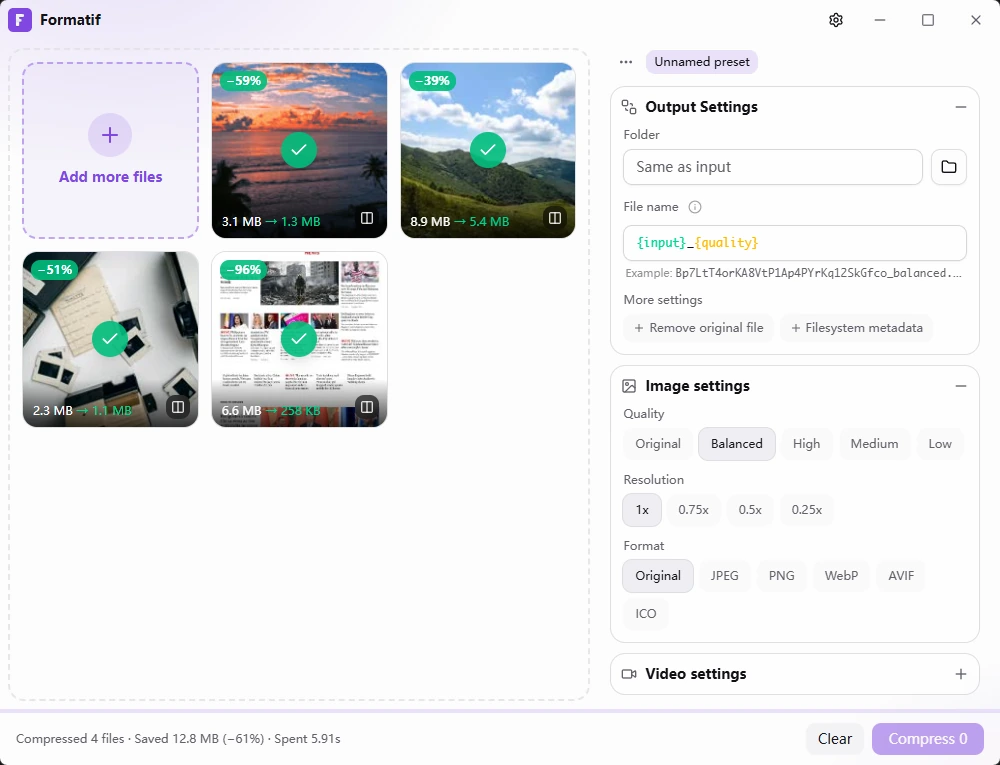
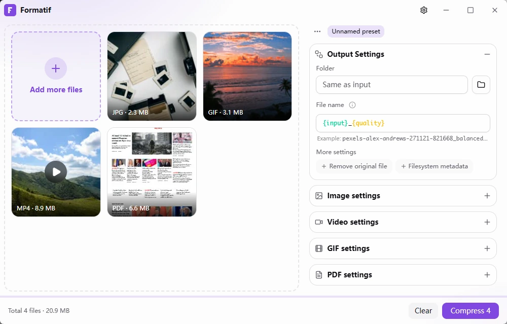
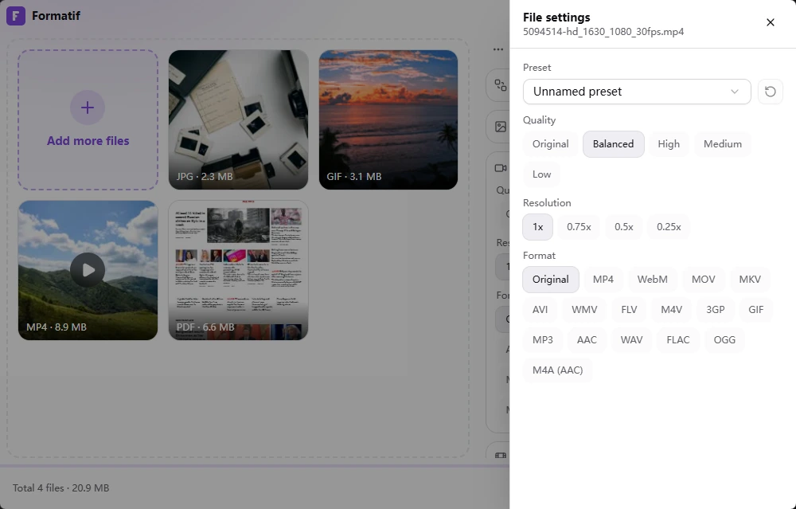
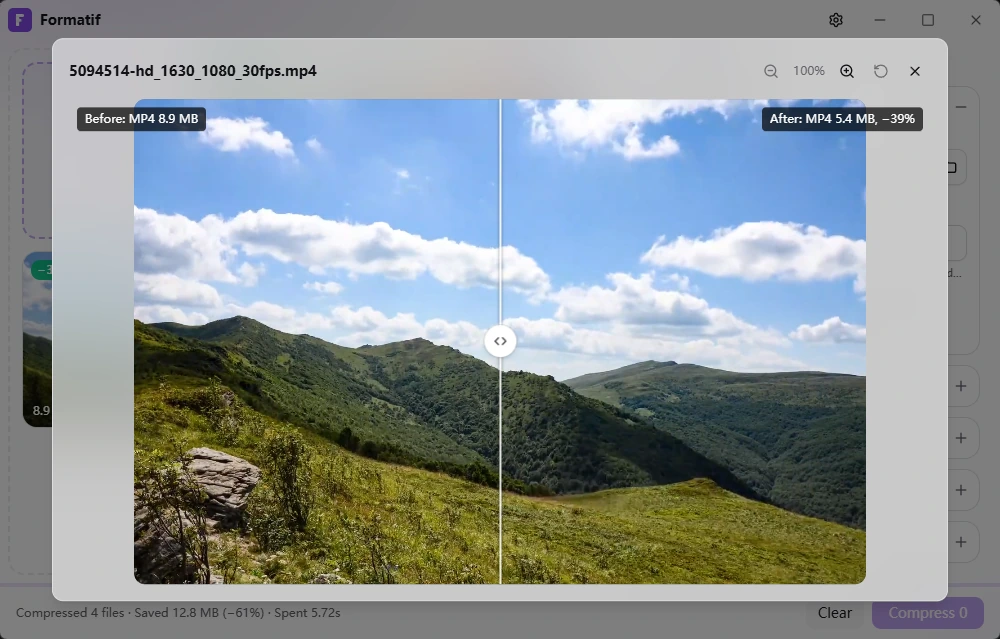
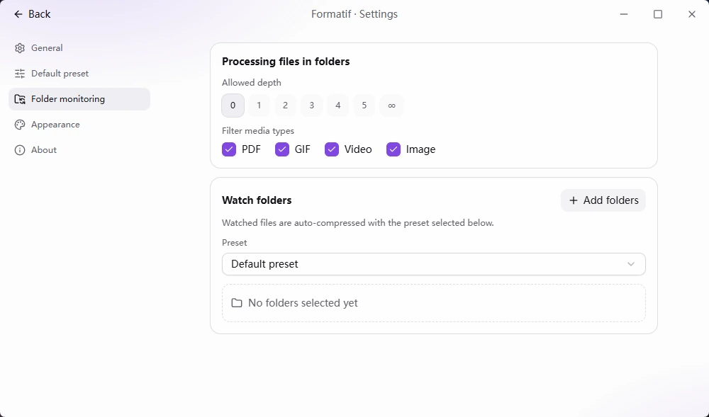

Compress images, video, GIFs
and PDFs — 100% local.
No uploads, no account, no subscription. Batch-compress your files in seconds, right on your own machine — free and open source.
Latest version — · view source on GitHub

Built for privacy and speed
Everything you need to shrink files, nothing you don't.
Free & open source
MIT licensed. No license key, no paywall, no telemetry — the source is right there on GitHub.
Private by design
Every file is processed locally with bundled ffmpeg, qpdf and gifsicle. Nothing ever leaves your machine.
Batch & fast
Drop single files or whole folders and compress everything in parallel. Watch folders for hands-free automation.
Whatever you need to shrink
Each category gets its own quality, resolution and format controls.
Image
JPEG, PNG, WebP, AVIF, ICO. Also decodes HEIC, PSD, SVG, TIFF, BMP and JPEG-2000 on the way in.
Video
MP4, WebM, MOV, MKV, AVI, WMV, FLV, M4V, 3GP — or extract the audio to MP3, AAC, WAV, FLAC.
GIF
Re-encode to MP4, WebM or WebP, or keep it a GIF and let gifsicle's lossy compression do the work.
Lossless structural recompression with qpdf, plus optional image downsampling for image-heavy PDFs.
Powerful, without the busywork
From a single screenshot to a whole export folder — Formatif keeps it simple.
Drop a file, or a whole folder
Formatif expands folders, sorts everything into the right category, and compresses in parallel. Thumbnails, progress and final savings show up per file.
- Drag & drop files or entire folders
- Compresses everything in parallel
- Live per-file progress & results

assets/shot-batch.webp
Quality, resolution, format — your call
Pick a quality preset from Original down to Low, scale resolution to 25%, and choose the output format per category. Need one file to be different? Override just that file.
- 5 quality presets, per category
- Scale resolution 100% → 25%
- Per-file overrides when you need them

assets/shot-controls.webp
Compare before and after
A side-by-side slider shows exactly what changed — for images, video, GIF and PDF alike. Check the quality before you keep the result.
- Side-by-side before/after slider
- Works for every format
- Exact size savings, per file

assets/shot-compare.webp
Watch folders, compress automatically
Point Formatif at a folder and it compresses anything dropped in — perfect for a screenshots folder, an export directory, or your downloads.
- Auto-compress files on drop
- A preset per watched folder
- Runs quietly in the background

assets/shot-watch.webp
Thoughtful details throughout
The small things that make it a joy to use every day.
Presets
Save named presets for the way you like to compress, switch in one click, and keep a read-only default as your baseline.
Output options
Name-template output files, drop them next to the source or a chosen folder, delete originals, or preserve file timestamps.
7 accent colors
A focused, distraction-free dark UI with seven accent colors — plus a light theme, so it matches your setup.
Bilingual
English and 简体中文, auto-selected from your system language and switchable any time.
Broad input support
Reads HEIC, PSD, SVG, TIFF, BMP and JPEG-2000 images, plus legacy video containers like MPG, TS and OGV.
Everything bundled
ffmpeg, qpdf and gifsicle ship inside the installer — nothing downloads on first run, and it still fits in ~34 MB.
Three steps, zero uploads
No wizards, no cloud round-trip — just drop and go.
Drop your files
Drag in files or entire folders. Formatif sorts them into images, video, GIFs and PDFs automatically.
Pick quality & format
Use the built-in preset or dial in your own quality, resolution and output format per category — or per file.
Get compressed output
ffmpeg, qpdf and gifsicle do the work locally. Compare before/after and see exactly what you saved.
Free and open source, actually
Formatif isn't a free trial of a paid app. It's MIT-licensed, the full source is on GitHub, and it always will be.
- No subscription, no license key, ever
- Zero telemetry — nothing phones home
- Inspect or fork every line of the source
- Issues and PRs welcome on GitHub
Good to know
Is Formatif really free?
Yes. Formatif is MIT-licensed and free forever — no paywall, no license key, no in-app upsells.
Does my data ever leave my computer?
No. Every compression job runs locally through the bundled ffmpeg, qpdf and gifsicle binaries. Nothing is uploaded, and Formatif doesn't collect telemetry.
Why does macOS say Formatif is "from an unidentified developer"?
The macOS build isn't code-signed yet (no Apple Developer certificate), so Gatekeeper quarantines it after download. Right-click the app → Open → confirm, or run xattr -rd com.apple.quarantine /Applications/Formatif.app once in Terminal. Notarization is on the roadmap.
What's actually inside the installer?
ffmpeg, qpdf and gifsicle, bundled as separate executables — nothing downloads on first run. ffmpeg and gifsicle are GPL-licensed, qpdf is Apache-2.0; Formatif's own code stays MIT.
Which platforms are supported?
Windows 10/11 and macOS on Apple Silicon today. Intel Mac support and a signed/notarized macOS build are on the roadmap.
Can I contribute or report a bug?
Please do — Formatif is open source. File issues or pull requests on GitHub.
Ready to shrink your files?
Download Formatif and compress your first batch in under a minute.